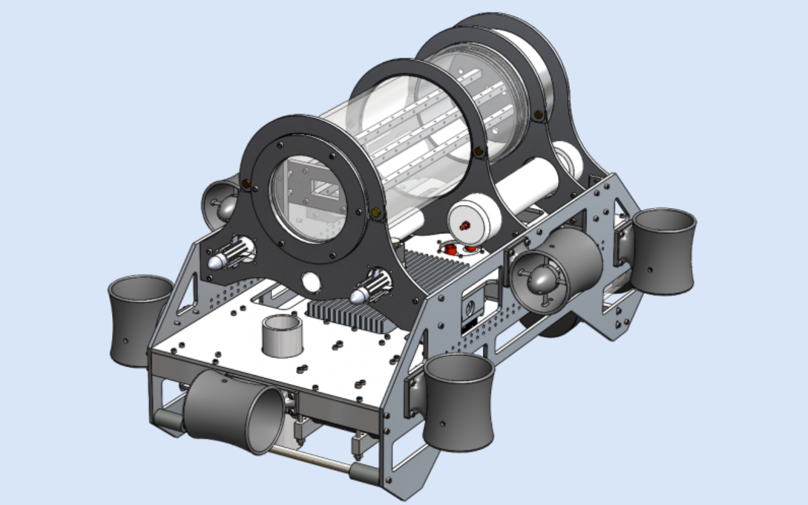

Polaris 2018

About Polaris
Polaris was the product of the golden age of AUVIC engineering students. The team worked hard and diligently to design, manufacture, and test this vehicle for the 2018 RoboSub competition and we are proud to showcase our seniors creation in its final form.
Polaris is equipped with 8 thrusters to allow omni-directional travel and has a large self-righting moment, achieved through the positioning of a 960 cubic inch, watertight electronics housing at the top of the AUV. Polaris’ subsystems are mounted to a starboard plate, produced using 2-axis manufacturing techniques. The ease of manufacturing of this plate makes Polaris a modular framework, as subsystems can be added and removed without significant modifications to the vehicle. These subsystems include:
Polaris is equipped with two 3D printed torpedoes. These torpedoes are propelled using compressed air stored inside a PVC cylinder and are actuated using a solenoid-controlled one-way valve.
To drop golf balls on a target, Polaris is equipped with a golf ball dropper. Golf balls are loaded and stored in a compartment on the AUV. To release these golf balls, a stepper motor rotates inside a watertight housing. This stepper is magnetically coupled with the golf ball dropping mechanism, allowing the golf ball to fall and hit the target.
Sonar systems are an integral part of the submarine's design. To complete many of the objectives in the competitions, the submarine must be able to locate pingers, or underwater speakers, emitting sound at fixed frequencies. The solve this problem, our submarine has an array of four hydrophones (underwater microphones). These hydrophones are all separated by a fixed/known distance. By analyzing the phase difference of the incoming waves to the array of hydrophones, we can triangulate the location of the pinger. To accomplish this, the hydrophone boards process and convert the incoming data.The hydrophone boards consist of two sub-boards: the microcontroller board and the pre-amplification board. The pre-amplification board is placed at the same location as the hydrophones, in a small housing at the bottom of the submarine. The board amplifies all incoming signals from the hydrophones, and transmits them off to the main housing. In the main housing, the microcontroller board converts the analog signals to digital, and sends the digital data to the main computer.
The Power Regulation Board is a new PCB that is the central power hub for all components on the Polaris. The board selects either the batteries or a tethered power source to power the sub, and is capable of cutting power via an onboard microcontroller to various systems in Polaris. RoboSub Rules requires that the sub have a “kill switch”, with can be pulled by divers to cut power to Polaris. This is implemented by using a magnetic switch, which cuts power to the sub when the switch is pulled. The Power Regulation Board must also be able to handle enough current to power the eight motors. This board also acts as a monitor for the main housing of Polaris by monitoring the housings’ pressure, temperature and humidity. It comes with an onboard water sensor, and it has the capabilities to measure the external water pressure. It measures the current being drawn from both the batteries and by individual subsystems, and has the ability to connect and disconnect the batteries in parallel using control logic from the microcontroller. The board is fused to protect against short circuits in any of the subsystems.
The board has a USB connector that can be used for USART communications. The microcontroller also has the capabilities to be powered either through USB or by the batteries, which is useful for debugging purposes, when batteries aren’t available. The relays are used to switch between battery power and tether power, and will always chose tether power over battery power when the tether is available. This can be used to easily conserve battery life during testing.
The previous motor controller could control up to three motors per PCB. Since Polaris utilizes 8 motors, this was enough reason to develop the second revision. This board can control up to 8 motors via PWM using their respective electronic speed controllers (ESC). The new configuration means the ESCs can be contained in the same enclosure as the PCB, reducing external wiring. The new revision allows the PCB to be used as a bus bar, eliminating the need for multiple high power lines to each motor. Connectors on the motor control board were made reversible, to prevent damage to the motors if the connector were connected in reverse. The system was upgraded from a F0 micro to a F4, which has a floating point unit for PID controls and may be implemented in the future.
Dry weight: 90 lbs
Overall Dimensions excluding thrusters: 35x16.5x21.5 in LxWxH
Depth Rating: 300 ft